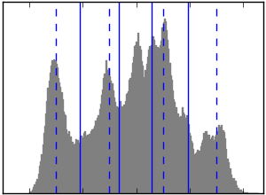

Python source code: plot_lena_compress.py
import scipy as sp
import pylab as pl
from scikits.learn import cluster
n_clusters = 5
np.random.seed(0)
lena = sp.lena()
X = lena.reshape((-1, 1)) # We need an (n_sample, n_feature) array
k_means = cluster.KMeans(k=n_clusters, n_init=4)
k_means.fit(X)
values = k_means.cluster_centers_.squeeze()
labels = k_means.labels_
lena_compressed = np.choose(labels, values)
lena_compressed.shape = lena.shape
vmin = lena.min()
vmax = lena.max()
pl.imsave('lena_compressed.png', lena_compressed, cmap=pl.cm.gray,
vmin=vmin, vmax=vmax)
pl.imsave('lena.png', lena, cmap=pl.cm.gray, vmin=vmin, vmax=256)
regular_values = np.linspace(0, 256, n_clusters+1)
regular_labels = np.searchsorted(regular_values, lena) - 1
regular_values = .5*(regular_values[1:] + regular_values[:-1])
regular_lena = np.choose(regular_labels.ravel(), regular_values)
regular_lena.shape = lena.shape
pl.imsave('lena_regular.png', regular_lena, cmap=pl.cm.gray, vmin=vmin,
vmax=vmax)
pl.figure(1, figsize=(3, 2.2))
pl.clf()
pl.axes([.01, .01, .98, .98])
pl.hist(X, bins=256, color='.5', edgecolor='.5')
pl.yticks(())
pl.xticks(regular_values)
values = np.sort(values)
for center_1, center_2 in zip(values[:-1], values[1:]):
pl.axvline(.5*(center_1+center_2), color='b')
for center_1, center_2 in zip(regular_values[:-1], regular_values[1:]):
pl.axvline(.5*(center_1+center_2), color='b', linestyle='--')
pl.savefig('lena_histogram.png', dpi=150)